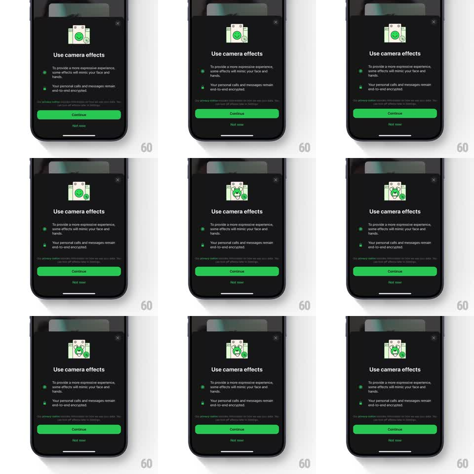

Media
Frame-by-frame

Rebuild this animation 1:1: WhatsApp's camera-effects sheet - the line-drawn camera illustration at the top morphs into a playful green avatar face while the sheet copy stays still.

Rebuild this animation 1:1: WhatsApp's camera-effects sheet - the line-drawn camera illustration at the top morphs into a playful green avatar face while the sheet copy stays still. ## Integration Integration: stack-agnostic spec - springs given as stiffness/damping, timed motions as duration + curve; map every value to your framework and animation library of choice. ## Scene Dark bottom sheet: "Use camera effects" title, two bullet lines about effects mimicking your face and end-to-end encryption, a privacy fine-print line, a green "Continue" button, and "Not now". At top center: a square vector illustration that begins as a camera (white body, green lens, small badge icons) and morphs into a grinning green avatar character wearing the camera's features. ## Motion spec Pattern: looping vector morph from camera to avatar. - The morph runs as one continuous shape interpolation (~900ms, ease-in-out): the camera's lens becomes the avatar's face, the body rounds into cheeks, the flash/viewfinder elements become the eyes and grin, and small badge icons orbit to the sides. - Accent sparkles pop around the illustration at the morph's midpoint (scale 0 -> 1 -> 0, 400ms, 3 sparkles staggered 80ms). - The avatar holds a beat with a happy bob (+-4pt, 1.2s), then morphs back to the camera (900ms) and the loop repeats (~4s cycle). - Sheet text, buttons, and background are completely static throughout. ## Calibration - The morph is a true path interpolation - shapes flow into each other, no crossfade between two pictures. - Green (lens -> face) is the constant color anchor through the morph. ## Reduced motion Camera and avatar crossfade once (400ms), then hold on the avatar. ## Don't miss - The illustration stays inside its square stage; nothing touches the title below. - The avatar's grin borrows the camera's curves - the design lineage must be visible.